공조냉동기계기사(구) (2013-03-10 기출문제)
1과목: 기계열역학
1. 기체가 0.3 MPa로 일정한 압력 하에 8m3에서 4m3까지 마찰 없이 압축되면서 동시에 500 kJ의 열을 외부에 방출하였다면, 내부에너지(kJ)의 변화는 얼마나 되겠는가?
- 약 700
- 약 1700
- 약 1200
- 약 1300
(정답률: 52%)

2. 어떤 가스의 비내부에너지 u(kJ/kg), 온도 t(℃), 압력 P(kPa), 비체적 v(m3/kg) 사이에는 다음의 관계식이 성립한다.
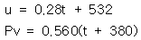
이 가스의 정압비열은 얼마 정도이겠는가?- 0.84 kJ/kg℃
- 0.68 kJ/kg℃
- 0.50 kJ/kg℃
- 0.28 kJ/kg℃
(정답률: 57%)
3. 잘 단열된 노즐에서 공기가 0.45 MPa에서 0.15 MPa로 팽창한다. 노즐 입구에서 공기의 속도는 50 m/s, 온도는 150℃이며 출구에서의 온도는 45℃이다. 출구에서의 공기 속도는? (단, 공기의 정압비열과 정적비열은 1.0035 kJ/kgㆍK, 0.7165 kJ/kgㆍK 이다.)
- 약 350 m/s
- 약 363 m/s
- 약 445 m/s
- 약 462 m/s
(정답률: 46%)
4. 다음 사항은 기계열역학에서 일과 열(熱)에 대한 설명이다. 이 중 틀린 것은?
- 일과 열은 전달되는 에너지이지 열역학적 상태량은 아니다.
- 일의 단위는 J(joule)이다.
- 일(work)의 크기는 힘과 그 힘이 작용하여 이동한 거리를 곱한 값이다.
- 일과 열은 점함수이다.
(정답률: 75%)
5. 10 kg의 증기가 온도 50℃, 압력 38 kPa, 체적 7.5 m3일 때 총 내부에너지는 6700 kJ이다. 이와 같은 상태의 증기가 가지고 있는 엔탈피(enthalpy)는 몇 kJ인가?
- 1606
- 1794
- 23⑤
- 6985
(정답률: 66%)
6. 227℃의 증기가 500 kJ/kg의 열을 받으면서 가역등온 팽창한다. 이때 증기의 엔트로피 변화는 약 얼마인가?
- 1.0 kJ/kgㆍK
- 1.5 kJ/kgㆍK
- 2.5 kJ/kgㆍK
- 2.8 kJ/kgㆍK
(정답률: 67%)
7. 가역단열펌프에 100 kPa, 50℃의 물이 2 kg/s로 들어가 4 MPa로 압축된다. 이 펌프의 소요 동력은? (단, 50℃에서 포화액체(saturated liquid)의 비체적은 0.001 m3/kg이다.)
- 3.9 kW
- 4.0 kW
- 7.8 kW
- 8.0 kW
(정답률: 50%)
8. 증기터빈 발전소에서 터빈 입출구의 엔탈피 차이는 130 kJ/kg이고, 터빈에서의 열손실은 10 kJ/kg이었다. 이 터빈에서 얻을 수 있는 최대 일은 얼마인가?
- 10 kJ/kg
- 120 kJ/kg
- 130 kJ/kg
- 140 kJ/kg
(정답률: 65%)
9. 어떤 냉장고의 소비전력이 200 W이다. 이 냉장고가 부엌으로 배출하는 열이 500 W라면, 이때 냉장고의 성능계수는 얼마인가?
- 1
- 2
- 0.5
- 1.5
(정답률: 65%)
10. 시스템의 온도가 가열과정에서 10℃에서 30℃로 상승하였다. 이 과정에서 절대온도는 얼마나 상승 하였는가?
- 11 K
- 20 K
- 293 K
- 303 K
(정답률: 68%)
11. 열펌프의 성능계수를 높이는 방법이 아닌 것은?
- 응축 온도를 낮춘다.
- 증발 온도를 낮춘다.
- 손실 일을 줄인다.
- 생성엔트로피를 줄인다.
(정답률: 64%)
12. 매시간 20 kg의 연료를 소비하는 100PS인 가솔린 기관의 열효율은 약 얼마인가? (단, 1 PS=750 W이고, 가솔린의 저위발열량은 43470 kJ/kg이다.)
- 18%
- 22%
- 31%
- 43%
(정답률: 62%)
13. 이상기체 1 kg이 가역등온 과정에 따라 P1= 2 kPa, V1=0.1m3로 부터 V2=0.3m3로 변화했을 때 기체가 한 일은 몇 주울(J)인가?
- 9540
- 2200
- 954
- 220
(정답률: 59%)
14. 공기 10 kg이 압력 200 kPa, 체적 5m3인 상태에서 압력 400 kPa, 온도 300℃인 상태로 변했다면 체적의 변화는? (단, 공기의 기체상수 R=0.287 kJ/kgㆍK이다.)
- 약 +0.6 m3
- 약 +0.9 m3
- 약 -0.6 m3
- 약 -0.9 m3
(정답률: 63%)
15. 이상기체의 가역단열 변화에서는 압력 P, 체적 V, 절대온도 T 사이에 어떤 관계가 성립 하는가? (단, 비열비 k=Cp/Cv이다.)
- PV=일정
- PVk-1=일정
- PTk=일정
- TVk-1=일정
(정답률: 55%)
16. 증기동력 사이클에 대한 다음의 언급 중 옳은 것은?
- 이상적인 보일러에서는 등온 가열 과정이 진행된다.
- 재열 사이클은 주로 사이클 효율을 낮추기 위해 적용 한다.
- 터빈의 토출 압력을 낮추면 사이클 효율도 낮아진다.
- 최고 압력을 높이면 사이클 효율이 높아진다.
(정답률: 51%)
17. 압력 5 kPa, 체적이 0.3 m3인 기체가 일정한 압력 하에서 압축되어 0.2 m3로 되었을 때 이 기체가 한 일은? (단, +는 외부로 기체가 일을 한 경우이고, -는 기체가 외부로부터 일을 받은 경우)
- 500 J
- -500 J
- 1000 J
- -1000 J
(정답률: 66%)
18. 다음 그림은 오토사이클의 P-V 선도 이다. 그림에서 3-4가 나타내는 과정은?
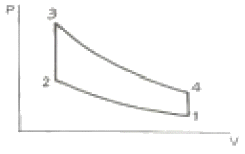
- 단열 압축과정
- 단열 팽창과정
- 정적 가열과정
- 정적 방열과정
(정답률: 64%)
19. 공기표준 Carnot 열기관 사이클에서 최저 온도는 280K이고, 열효율은 60%이다. 압축전 압력과 열을 방출한 후 압력은 100 kPa이다. 열을 공급하기 전의 온도와 압력은? (단, 공기의 비열비는 1.4이다.)
- 700 K, 2470 kPa
- 700 K, 2200 kPa
- 600 K, 2470 kPa
- 600 K, 2200 kPa
(정답률: 58%)
20. 400 K의 물 1.0 kg/s와 350 K의 물 0.5 kg/s가 정상과정으로 혼합되어 나온다. 이 과정 중에 300 kJ/s의 열손실이 있다. 출구에서 물의 온도는 약 얼마인가? (단,물의 비열은 4.18 kJ/kgㆍK이다.)
- 369.2 K
- 350.1 K
- 335.5 K
- 320.3 K
(정답률: 51%)
2과목: 냉동공학
21. 팽창밸브 중에서 과열도를 검출하여 냉매유량을 제어하는 것은?
- 정압식 자동팽창밸브
- 수동팽창밸브
- 온도식 자동팽창밸브
- 모세관
(정답률: 82%)
22. 냉동장치의 고압부에 대한 안전장치가 아닌 것은?
- 안전밸브
- 고압압력스위치
- 가용전
- 방폭문
(정답률: 80%)
23. 수냉식 응축기와 공랭식 응축기의 구조와 전열특성상 초기 설치비용 및 유지보수 관점에 따른 경제성을 비교한 것 중에서 옳지 않은 것은?(오류 신고가 접수된 문제입니다. 반드시 정답과 해설을 확인하시기 바랍니다.)
- 공랭식 응축기의 경우 수냉식에 비하여 일반적으로 큰 압축기가 사용되므로 전력비용이 커진다.
- 저렴한 용수가 공급되는 곳에서는 수냉식 응축기가 관리 유지비용면에서 유리하다.
- 경제성 비교에서는 수냉식이나 공랭식 응축기 모두 관내부 또는 외벽 핀 사이의 오염물질 제거 들에 소요되는 제반 비용을 고려할 필요가 없다.
- 냉각탑 설치가 필요한 경우는 초기비용과 운전비가 추가되므로 경제성 분석을 할 필요가 있다.
(정답률: 78%)
24. 다음 그림에서와 같이 어떤 사이클에서 응축온도만 변화하였을 때 틀린 것은? (단, 사이클A : (A - B - C - D - A)
사이클B : (A - B' - C' - D' - A)
사이클C : (A - B'' - C'' - D'' - A)이다.)
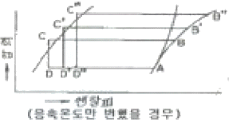
- 압축비 : 사이클C＞사이클B＞사이클A
- 압축일량 : 사이클C＞사이클B＞사이클A
- 냉동효과 : 사이클C＞사이클B＞사이클A
- 성적계수 : 사이클C＜사이클B＜사이클A
(정답률: 76%)
25. 다음 그림의 사이클과 같이 운전되고 있는 R-22 냉동장치가 있다. 이때 압축기의 압축효율 80%, 기계효율 85%로 운전된다고 하면 성적계수는 약 얼마인가?
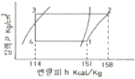
- 3.2
- 3.4
- 3.6
- 3.8
(정답률: 73%)
26. 압축기의 체적효율에 대한 설명으로 옳은 것은?
- 톱 클리어런스(top clearance)가 작을수록 체적효율은 작다.
- 같은 흡입압력, 같은 증기 과열도에서 압축비가 클수록 체적효율은 작다.
- 피스톤 링(piston ring) 및 흡입 변의 시트(sheet)에서 누설이 작을수록 체적효율이 작다.
- 흡입증기의 밀도가 클수록 체적효율은 크다.
(정답률: 61%)
27. 암모니아 냉매를 사용하고 있는 과일 보관용 냉장창고에서 암모니아가 누설되었을 때 보관 물품의 손상을 방지하기 위한 방법으로 옳지 않은 것은?
- SO2로 중화시킨다.
- CO2로 중화시킨다.
- 환기시킨다.
- 물로 씻는다.
(정답률: 72%)
28. 냉동장치에서 압력용기의 안전장치로 사용되는 가용전 및 파열판에서 대한 설명으로 옳지 않은 것은?
- 파열판의 파열압력은 내압시험 압력이상의 압력으로 한다.
- 응축기에 부착하는 가용전의 용융온도는 보통 75℃ 이하로 한다.
- 안전밸브와 파열판을 부착한 경우 파열판의 파열압력은 안전밸브의 작동 압력이상으로 해도 좋다.
- 파열판은 터보 냉동기에 주로 사용된다.
(정답률: 59%)
29. 압축 냉동 사이클에서 응축온도가 일정할 때 증발온도가 낮아지면 일어나는 현상 중 틀린 것은?
- 압축일의 열당량 증가
- 압축기 토출가스 온도 상승
- 성적계수 감소
- 냉매순환량 증가
(정답률: 74%)
30. 유량 100L/min의 물을 15℃에서 5℃로 냉각하는 수 냉각기가 있다. 이 냉동장치의 냉동효과(냉매단위 질량당)가 40 kcal/kg일 경우 냉매 순환량은 얼마인가?
- 25 kg/h
- 1000 kg/h
- 1500 kg/h
- 500 kg/h
(정답률: 67%)
31. 스크류 압축기에 관한 설명으로 틀린 것은?
- 흡입밸브와 피스톤을 사용하지 않아 장시간의 연속운전이 가능하다.
- 압축기의 행정은 흡입, 압축, 토출행정의 3행정이다.
- 회전수가 3500rpm 정도의 고속회전임에도 소음이 적으며, 유지보수에 특별한 기술이 없어도 된다.
- 10~100%의 무단계 용량제어가 가능하다.
(정답률: 73%)
32. 프레온 냉매의 경우 흡입배관에 이중 입상관을 설치하는 목적으로 적합한 것은?
- 오일의 회수를 용이하게 하기 위하여
- 흡입가스의 과열을 방지하기 위하여
- 냉매액의 흡입을 방지하기 위하여
- 흡입관에서의 압력강하를 줄이기 위하여
(정답률: 77%)
33. 일반적으로 사용되고 있는 제상방법이라고 할 수 없는 것은?
- 핫 가스에 의한 방법
- 전기가열기에 의한 방법
- 운전 정지에 의한 방법
- 액 냉매 분사에 의한 방법
(정답률: 59%)
34. 응축기에서 두께 3mm의 냉각관에 두께 0.1mm의 물때와 0.02mm의 유막이 있다. 열전도도는 냉각관 40kcal/mh℃, 물때 0.8kcal/mh℃, 유막 0.1kcal/mh℃이고 열전달율은 냉매측 2500kcal/m2h℃, 냉각수축 1500kcal/m2h℃일 때 열통과율은 약 얼마인가?
- 681.8kcal/m2h℃
- 618.7kcal/m2h℃
- 714.7kcal/m2h℃
- 741.8kcal/m2h℃
(정답률: 62%)
35. 압축기 과열의 원인으로 가장 적합한 것은?
- 냉각수 과대
- 수온저하
- 냉매 과충전
- 압축기 흡입밸브 누설
(정답률: 63%)
36. 냉각수 입구 온도가 32℃, 출구온도가 37℃, 냉각수량이 100L/min인 수냉식 응축기가 있다. 압축기에 사용되는 동력이 8kW이라면 이 장치의 냉동능력은 약 몇 냉동톤 인가?
- 7 RT
- 8 RT
- 9 RT
- 10 RT
(정답률: 52%)
37. 냉매와 브라인에 관한 설명 중 틀린 것은?
- 프레온 냉매에서 동부착 현상은 수소원자가 적을수록 크다.
- 유기브라인은 무기브라인에 비해 금속을 부식시키는 경향이 적다.
- 염화칼슘 브라인에 의한 부식을 방지하기 위해 방식제를 첨가한다.
- 프레온 냉매와 냉동기유의 용해 정도는 온도가 낮을수록 많아진다.
(정답률: 53%)
38. 응축기에 관한 설명 중 옳은 것은?
- 횡형 셀앤튜브식 응축기의 관내 수속은 5m/s가 적당하다.
- 공냉식 응축기는 기온의 변동에 따라 응축능력이 변하지 않는다.
- 입형 셀 튜브식 응축기는 운전 중에 냉각관의 청소를 할 수 있다.
- 주로 물의 감열로서 냉각하는 것이 증발식 응축기이다.
(정답률: 81%)
39. 냉장고 방열재의 두께가 200mm이었는데, 냉동효과를 좋게하기 위해서 300mm로 보강시켰다. 이 경우 열손실은 약 몇 % 감소하는가? (단, 외기가 외벽면과의 사이에 열전달율은 20kcal/m2h℃, 창고내 공기와 내벽면과의 사이에 열전달율은 10kcal/m2h℃, 방열재의 열전도율은 0.035kcal/mh℃ 이다.)
- 30
- 33
- 38
- 40
(정답률: 59%)
40. 스테판-볼쯔만(Stetan-Boltzmann)의 법칙과 관계있는 열이동 현상은 무엇인가?
- 열전도
- 열대류
- 열복사
- 열통과
(정답률: 83%)
3과목: 공기조화
41. 200kVA 변압기 5대를 수용할 수 있는 건물 변전실이 있다. 변압기 최대 시의 효율을 98%로 하고, 전력이 피크일 때의 전건물의 변압기 역률은 94%라면, 이때의 변압기 발열량은 얼마인가?
- 67680 kJ/h
- 211720 kJ/h
- 216040 kJ/h
- 331730 kJ/h
(정답률: 31%)
42. 어떤 공기조화 장치에 있어서, 실내로부터 환기의 일부를 외기와 혼합한 후 냉각코일을 통과시키고, 이 냉각코일출구의 공기와 환기의 나머지를 혼합하여 송풍기로 실내에 재순환시키는 장치의 흐름도는 어느 것인가?
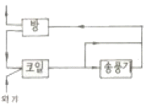
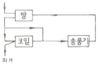
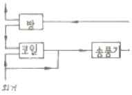
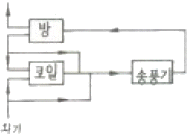
(정답률: 78%)
43. 보일러에서 급수내관(feed water injection pipe)을 설치하는 목적으로 가장 적합한 것은?
- 보일러수 역류방지
- 슬러지 생성방지
- 부동팽창 방지
- 과열 방지
(정답률: 62%)
44. 다음 난방식의 표준방열량에 대한 것으로 옳은 것은?
- 증기난방 : 450 kcal/m2ㆍh
- 온수난방 : 650 kcal/m2ㆍh
- 복사난방 : 860 kcal/m2ㆍh
- 온풍난방 : 표준발열량이 없다.
(정답률: 75%)
45. 열교환기의 입구측 공기 및 물의 온도가 각각 30℃, 10℃ 출구측 공기 및 물의 온도가 각각 15℃, 13℃일 때, 대향류의 대수평균 온도차(LMTD)는 약 얼마인가?
- 6.8℃
- 7.8℃
- 8.8℃
- 9.8℃
(정답률: 51%)
46. 아네모스탯(anemostat)형 취출구에서 유인비의 정의로 옳은 것은? (단, 취출구로부터 공급된 조화공기를 1차 공기(PA), 실내공기가 유인되어 1차공기와 혼합한 공기를 2차 공기(SA), 1차와 2차 공기를 모두 합한 것을 전공기(TA)라 한다.)
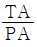
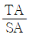
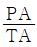
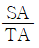
(정답률: 65%)
47. 주철제 보일러의 특징을 설명한 것으로 틀린 것은?
- 섹션을 분할하여 반입하므로 현장설치의 제한이 적다.
- 강제 보일러보다 내식성이 우수하며 수명이 길다.
- 강제 보일러보다 급격한 온도변화에 강하여 고온ㆍ고압의 대용량으로 사용된다.
- 섹션을 증가시켜 간단하게 출력을 증가시킬 수 있다.
(정답률: 72%)
48. 에어워셔에 대한 내용으로 옳지 않은 것은?
- 세정실(Spray chamber)은 엘리미네이터 뒤에 있어 공기를 세정한다.
- 분무노즐(Spray nozzle)은 스탠드파이프에 부착되어 스프에이 헤더에 연결된다.
- 플러딩 노즐(Flooding nozzle)은 먼지를 세정한다.
- 다공판 또는 루버(Louver)는 기류를 정류해서 세정실내를 통과시키기 위한 것이다.
(정답률: 76%)
49. 공기의 온도에 따른 밀도 특성을 이용한 방식으로 실내보다 낮은 온도의 신성공기를 해당구역에 공급함으로서 오염물질을 대류효과에 의해 실내 상부에 설치된 배기구를 통해 배출시켜 환기 목적을 달성하는 방식은?
- 기계식 환기법
- 전반 환기법
- 치환 환기법
- 국소 환기법
(정답률: 73%)
50. 송풍량 600m3/min을 공급하여 다음의 공기선도와 같이 난방하는 실의 가습열량(Kcal/h)은 약 얼마인가? (단, 공기의 비중은 1.2kg/m3, 비열은 0.24Kcal/kg℃ 이다.)
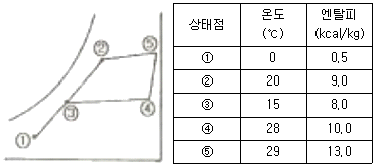
- 31100
- 86400
- 129600
- 172800
(정답률: 49%)
51. 원심송풍기 번호가 No2일 때 회전날개(깃)의 직경(mm)은 얼마인가?
- 150
- 200
- 250
- 300
(정답률: 62%)
52. 정압의 상승분을 다음 구간 덕트의 압력손실에 이용하도록 한 덕트 설계법으로 옳은 것은?
- 정압법
- 등속법
- 등온법
- 정압 재취득법
(정답률: 80%)
53. 건구온도 30℃, 절대습도 0.017 kg/kg 인 습공기 1kg의 엔탈피는 약 몇 kJ/kg인가?
- 33
- 50
- 60
- 74
(정답률: 36%)
54. 다음 중 열회수 방식에 속하지 않는 것은?
- 직접이용 방식
- 전열교환기 방식
- VAV공조기 방식
- 승온이용 방식
(정답률: 67%)
55. 매시 1500m3의 공기(건구온도 12℃, 상대습도 60%)를 20℃까지 가열하는데 필요로 하는 열량은 약 얼마인가? (단, 처음 공기의 비체적은 v=0.815m3/kg, 가열 전후의 엔탈피 h1=6.0kcal/kg, h2=8.0kcal/kg 이다.)
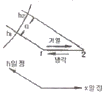
- 25767 kcal/h
- 4890 kcal/h
- 3680 kcal/h
- 24000 kcal/h
(정답률: 52%)
56. 습공기를 노점온도까지 냉각시킬 때 변하지 않는 것은?
- 엔탈피
- 상대습도
- 비체적
- 수증기 분압
(정답률: 58%)
57. 팬 코일 유닛방식은 배관방식에 따라 2관식, 3관식, 4관식이 있다. 아래의 설명 중 적당치 못한 것은?
- 4관식은 냉수배관, 온수배관을 설치하여 각 계통마다 동시에 냉난방을 자유롭게 할 수 있다.
- 4관식 중 2코일식은 냉온수간의 밸런스 문제가 복잡하고 열손실이 많다.
- 3관식은 환수관에서 냉수와 온수가 혼합되므로 열손실이 생긴다.
- 환경 제어성능이나 열손실 면에서 4관식이 가장 좋으나 설비비나 설치면적이 큰 것이 단점이다.
(정답률: 70%)
58. 다음 중 중앙식 공기조화 방식이 아닌 것은?
- 유인유닛 방식
- 팬코일 유닛방식
- 변풍량 단일덕트 방식
- 패키지 유닛방식
(정답률: 67%)
59. 증기난방 방식을 분류한 것으로 잘못된 것은?
- 증기온도에 따른 분류
- 배관방법에 따른 분류
- 증기압력에 따른 분류
- 응축수 환수법에 따른 분류
(정답률: 57%)
60. 다음 중 예상온열감(PW)의 일반적인 열적 쾌적범위에 속하는 것은?
- -0.2＜PMV＜+0.2
- -0.3＜PMV＜+0.3
- -0.4＜PMV＜+0.4
- -0.5＜PMV＜+0.5
(정답률: 62%)
4과목: 전기제어공학
61. 60[Hz], 4극, 슬립 6%인 유도전동기를 어느 공장에서 운전하고자 할 때 예상되는 회전수는 약 몇 [rpm] 인가?
- 1300
- 1400
- 1700
- 1800
(정답률: 60%)
62. 처음에 충전되지 않은 커패시터에 그림과 같은 전류파형이 가해질 때 커패시터 양단의 전압파형은?
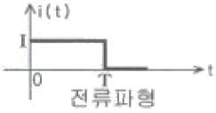
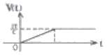
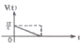
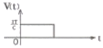
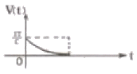
(정답률: 71%)
63. 제어장치의 에너지에 의한 분류애서 타력제어와 비교한 자력제어의 특징 중 맞지 않는 것은?
- 저비용
- 단순구조
- 확실한 동작
- 빠른 조작 속도
(정답률: 72%)
64. 환상의 솔레노이드 철심에 200회의 코일을 감고 2[A]의 전류를 흘릴 때 발생하는 기자력은 몇 [AT]인가?
- 50
- 100
- 200
- 400
(정답률: 73%)
65. 운전자가 배치되어 있지 않는 엘리베이터의 자동제어는?
- 추종제어
- 프로그램제어
- 정치제어
- 프로세스제어
(정답률: 80%)
66. 그림과 같은 블록선도에서 등가 합성 전달함수는?
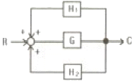
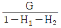
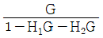
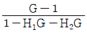
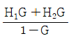
(정답률: 74%)
67. 전달함수
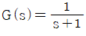
인 제어계의 인디셜 응답은?- 1+e-t
- 1-e-t
- e-t-1
- e-t
(정답률: 65%)
68. 직류 분권발전기를 운전 중 역회전 시키면 일어나는 현상은?
- 단락이 일어난다.
- 정회전 때와 같다.
- 발전되지 않는다.
- 과대 전압이 유기된다.
(정답률: 66%)
69. 예비전원으로 사용되는 축전지의 내부 저항을 측정하려고 한다. 가장 적합한 브리지는?
- 휘트스톤 브리지
- 캠벨 브리지
- 코올라우시 브리지
- 멜스웰 브리지
(정답률: 66%)
70. R=100[Ω], L=20[mH], C=47[μF]인 R-L-C 직렬회로에 순시전압 v=141.4sin 377t[V]를 인가하면 이 회로의 임피던스는 약 몇 [Ω]인가?
- 97
- 111
- 122
- 130
(정답률: 44%)
71. 서보 전동기의 특징으로 잘못 표현된 것은?
- 기동, 정지, 역전 동작을 자주 반복할 수 있다.
- 발열이 작아 냉각방식이 필요 없다.
- 속응성이 충분히 높다.
- 신뢰도가 높다.
(정답률: 71%)
72. 측정하고자 하는 양을 표준향과 서로 평형을 이루도록 조절하여 표준량의 값에서 측정량을 구하는 측정방식은?
- 편위법
- 보상법
- 치환법
- 영위법
(정답률: 69%)
73. 기준입력신호에서 제어량을 뺀 값으로 제어계의 동작결정의 기초가 되는 것은?
- 기준 입력
- 제어 편차
- 제어 입력
- 동작 편차
(정답률: 53%)
74. 그림과 같은 논리회로는?
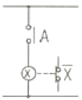
- AND회로
- OR회로
- NOT회로
- NOR회로
(정답률: 58%)
75. 5[kW], 20[rps]인 유도전동기의 토크는 약 몇 [kgㆍm]인가?(오류 신고가 접수된 문제입니다. 반드시 정답과 해설을 확인하시기 바랍니다.)
- 39.81
- 27.09
- 18.81
- 8.12
(정답률: 18%)
76. 미리 정해진 순서 또는 일정의 논리에 의해 정해진 순서에 따라 제어의 각 단계를 순차적으로 진행시켜가는 제어를 무엇이라 하는가?
- 비율차동제어
- 조건제어
- 시퀀스제어
- 루프제어
(정답률: 81%)
77. 여러가지 전해액을 이용한 전기분해에서 동일량의 전기로 석출되는 물질의 양을 각각의 화학당량에 비례한다고 하는 법칙은?
- 페러데이의 법칙
- 줄의 법칙
- 렌츠의 법칙
- 쿨롱의 법칙
(정답률: 69%)
78. 프로세스 제어용 검출기기는?
- 유량계
- 전압검출기
- 속도검출기
- 전위차계
(정답률: 60%)
79. 공기식 조작기기의 장점을 나타낸 것은?
- 신호를 먼 곳까지 보낼 수 있다.
- 신형의 특성에 가깝다.
- PID 동작을 만들기 쉽다.
- 큰 출력을 얻을 수 있다.
(정답률: 62%)
80. 3상 유도전동기에서 일정 토크 위하여 인버터를 사용하여 속도제어를 하고자 할 때 공급전압과 주파수의 관계는 어떻게 해야 하는가?
- 공급전압과 주파수는 비례되어야 한다.
- 공급전압과 주파수는 반비례되어야 한다.
- 공급전압이 항상 일정하여야 한다.
- 공급전압의 제곱에 비례하여야 한다.
(정답률: 61%)
5과목: 배관일반
81. 호칭지름 20A의 강관을 곡률반지름 200cm로 120°의 각도로 구부릴 때 강관의 곡선길이는 약 몇 mm 인가?
- 390
- 4⑤
- 419
- 487
(정답률: 53%)
82. 합성수지류 패킹 중 테프론(teflon)의 내열범위로 옳은 것은?
- -30℃ ~ 140℃
- -100℃ ~ 260℃
- -260℃ ~ 260℃
- -40℃ ~ 120℃
(정답률: 61%)
83. 제조소 및 공급소 밖의 도시가스 배관을 시가지 외의 도로 노면 밑에 매설하는 경우에는 노면으로부터 배관의 외면까지 몇 m이상을 유지해야 하는가?
- 1m
- 1.2m
- 1.5m
- 2.0m
(정답률: 52%)
84. 배수관의 시공방법에 대한 설명으로 틀린 것은?
- 연관의 굴곡부에 다른 배수지관을 접속해서는 안 된다.
- 오버플로관은 트랩의 유입구측에 연결해서는 안 된다.
- 우수 수직관에 배수관을 연결하여서는 안 된다.
- 냉장 상자에서의 배수를 일반 배수관에 연결해서는 안 된다.
(정답률: 60%)
85. 증기난방의 환수방법 중 증기의 순환이 가장 빠르며 방열기의 설치위치에 제한을 받지 않고 대규모 난방에 주로 채택되는 방식은?
- 단관식 상향 증기 난방법
- 단관식 하향 증기 난방법
- 진공환수식 증기 난방법
- 기계환수식 증기 난방법
(정답률: 74%)
86. 옥상탱크식 급수법에 관한 설명이 옳은 것은?
- 옥상탱크의 오버플로관(over flow pipe)지름은 일반적으로 양수관의 지름보다 2배정도 큰 것으로 한다.
- 옥상탱크의 용량은 1일간 무제한 급수할 수 있는 용량(크기)이어야 한다.
- 펌프에서의 양수관은 옥상탱크의 하부에 연결한다.
- 급수를 위한 급수관은 탱크의 최저 하부에서 빼낸다.
(정답률: 50%)
87. 펌프를 운전할 때 공동현상(캐비테이션)의 발생 원인이 아닌 것은?
- 토출양정이 높다.
- 유체의 온도가 높다.
- 날개차의 원주속도가 크다.
- 흡입관의 마찰저항이 크다
(정답률: 56%)
88. 냉동방법의 분류이다. 해당되지 않는 것은?
- 융해열을 이용하는 방법
- 증발열을 이용하는 방법
- 펠티어(peltier) 효과를 이용하는 방법
- 제백(seebeck)효과를 이용하는 방법
(정답률: 68%)
89. 동관의 외경 산출공식으로 바르게 표시된 것은?
- 외경 = 호칭경(인치) + 1/8(인치)
- 외경 = 호칭경(인치) × 25.4
- 외경 = 호칭경(인치) + 1/4(인치)
- 외경 = 호칭경(인치) × 3/4 + 1/8(인치)
(정답률: 72%)
90. 냉매배관 시 흡입관 시공에 대한 설명으로 잘못된 것은?
- 각각의 증발기에서 흡입주관으로 들어가는 관은 주관의 하부에 접속한다.
- 압축기 가까이에 트랩을 설치하면 액이나 오일이 고여 액백(liquid back)발생의 우려가 있으므로 피해야 한다.
- 흡입관의 입상이 매우 길 경우에는 약 10m 마다 중간에 트랩을 설치한다.
- 2대 이상의 증발기가 다른 위치에 있고 압축기가 그 보다 밑에 있는 경우 증발기 출구의 관은 트랩을 만든 후 증발기 상부 이상으로 올리고 나서 압축기로 향한다.
(정답률: 39%)
91. 방열기나 팬코일 유니트에 가장 적합한 관 이음은?
- 스위블 이음(swivel joint)
- 루프 이음(loop joint)
- 슬리리브 이음(sleeve joint)
- 벨로우즈 이음(bellow joint)
(정답률: 70%)
92. 증기난방용 방열기를 열손실이 가장 많은 창문 쪽의 벽면에 설치할 때 벽면과의 거리는 얼마가 가장 적합한가?
- 5~6m
- 8~10m
- 10~15m
- 15~20m
(정답률: 80%)
93. 도시가스 제조사업소의 부지 경계에서 정압기(整壓器)까지 이르는 배관을 말하는 것은?
- 본관
- 내관
- 공급관
- 사용관
(정답률: 69%)
94. 급탕배관과 온수난방배관에 사용하는 팽창탱크에 관한 설명이다. 적합하지 않은 것은?
- 고온수난방에는 밀폐형 팽창탱크를 사용한다.
- 물의 체적변화에 대응하기 위한 것이다.
- 팽창탱크를 통한 열손실은 고려하지 않아도 좋다.
- 안전밸브의 역할을 겸한다.
(정답률: 77%)
95. 배수트랩의 구비조건으로서 옳지 않은 것은?
- 트랩 내면이 거칠고 오물부착으로 유해가스 유입이 어려울 것
- 배수자체의 유수에 으하여 배수로를 세정할 것
- 봉수가 항상 유지될 수 있는 구조일 것
- 재질은 내식 및 내구성이 있을 것
(정답률: 74%)
96. 보온재의 선정 조건으로 적당하지 않은 것은?
- 열전도율이 작아야 한다.
- 안전 사용온도에 적합해야 한다.
- 물리적ㆍ화학적 강도가 커야 한다.
- 흡수성이 적고, 부피와 비중이 커야 한다.
(정답률: 79%)
97. 팬코일 유닛방식의 배관방식에서 공급관이 2개이고 환수관이 1개인 방식으로 옳은 것은?
- 1관식
- 2관식
- 3관식
- 4관식
(정답률: 80%)
98. 냉매 배관의 액관 안에서 증발하는 것을 방지하기 위한 사항이다. 틀린 것은?
- 액관의 마찰 손실 압력은 19.6 kPa로 제한하도록 한다,
- 매우 긴 입상 액관의 경우 압력의 감소가 크므로 충분한 과냉각이 필요하다.
- 액관내의 유속은 2.5~3.5m/s 정도로 하면 좋다.
- 배관은 가능한 짧게 하여 냉매가 증발하는 것을 방지한다.
(정답률: 67%)
99. 강관의 용접 이음에 해당되지 않는 것은?
- 맞대기 용접이음
- 기계식 용접이음
- 슬리브 용접이음
- 플랜지 용접이음
(정답률: 50%)
100. 공기조화설비에서 수 배관 시공 시 주요 기기류의 접속배관에는 수리 시에 전계통의 물을 배수하지 않도록 서비스용 밸브를 설치한다. 이때 밸브를 완전히 열었을 때 저항이 적은 밸브가 요구되는데 가장 적당한 밸브는?
- 나비밸브
- 게이트밸브
- 니들밸브
- 글로브밸브
(정답률: 71%)
주어진 상황에서 압력은 일정하므로 PΔV는 0이 된다. 따라서 내부에너지 변화는 ΔU = Q = 500 kJ이다. 이 값은 보기 중에서 "약 700"에 해당하므로 정답은 "약 700"이다.